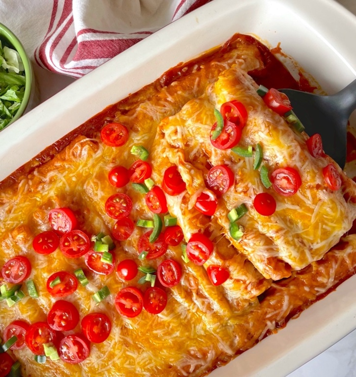

Lazy Enchiladas
This recipe is perfect for a quick and easy dinner. It uses frozen taquitos,
refried beans, and enchilada sauce to create a delicious meal with minimal effort.

Ingredients
- 1 can (16 oz) refried beans
- 1 can (19 oz) enchilada sauce
- Pack of 20 frozen taquitos
- 2 cups shredded cheese
- sour cream for serving
Instructions
- Preheat oven to 400°F and grease a 9x13 baking dish.
- Scoop the refried beans into the bottom of your dish and spread evenly
over the bottom of your baking dish.
- Place the frozen taquitos in a single layer on top of the beans.
- Pour the enchilada sauce over the top of the taquitos.
- Add your cheese on top of the enchilada sauce and bake in the oven for
25 minutes.
- Enjoy with sour cream or anything else you'd like such as shredded lettuce,
guacamole, or jalapenos, etc.